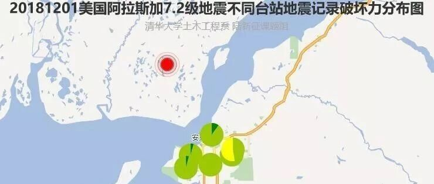

20181201美国阿拉斯加7.2级地震破坏力分析
致谢和声明：
感谢美国工程强震数据中心（CESMD）为本研究提供数据支持。本分析仅供科研使用，具体灾情和灾损分析应根据现场调查情况确定。
一、地震情况简介
当地时间2018年11月30日8时29分，北京时间12月1日1时29分，美国阿拉斯加发生7.2级地震，震中位于北纬61.35度、西经150.06度，震源深度40.0公里。
二、强震记录及分析
20181201美国阿拉斯加7.2级地震获得了6条强地震动，由于地震动没有完全收集，可能还有更强的记录。典型地震记录分析如下：
8047台站位置为北纬61.189度，西经149.802度(图1)，震中距18.4km。记录到水平向地震动峰值加速度为807cm/s2，竖直向地震动峰值加速度为367cm/s2。该地震动如图2、图3所示。

图1 8047台站位置

(a) EW

(b) NS

(c) UD
图2 8047台站地面运动记录

图3 8047台站记录反应谱
三、地震动对典型城市区域破坏能力分析
利用密布强震台网在震后获取的实时地震动信息，再结合城市抗震弹塑性分析，就可以得到地震发生后不同地点的建筑破坏情况，为抗震救灾决策提供科学支撑。图4为根据20181201美国阿拉斯加7.2级地震震中附近范围内台站记录分析得到的建筑震害分布示意图。点击“阅读原文”可以查看网页版地震力分布图。


图4 20181201美国阿拉斯加7.2级地震不同台站地震记录破坏力分布图
四、地震动对典型单体结构破坏能力分析
(1) 对典型多层框架结构破坏作用
模型1：六层框架结构
将8047台站记录输入立面布置如图5 (a)所示的6度、7度和8度设防的典型六层钢筋混凝土框架结构，得到其层间位移角包络如图5 (b)所示。


(a) 立面布置示意图
(b) 层间位移角包络图
图5 典型六层钢筋混凝土框架结构
模型2：三层框架结构（感谢中国建筑设计研究院王奇教授级高工提供模型）
将8047台站记录输入立面布置如图6 (a)所示的6度、7度和8度设防的典型三层钢筋混凝土框架结构，得到其层间位移角包络如图6 (b)所示。


(a) 立面布置示意图
(b) 层间位移角包络图
图6 典型三层钢筋混凝土框架结构
(2) 对典型超高层结构破坏作用
模型1
将8047台站记录输入图7 (a)所示某典型超高层结构1，得到其层间位移角包络如图7 (b)所示。


(a) 结构布置示意图 (b) 层间位移角包络图
图7 典型超高层结构1
模型2
将8047台站记录输入图8 (a)所示某典型超高层结构2，得到其层间位移角包络如图8 (b)所示。


(a) 结构布置示意图 (b) 层间位移角包络图
图8 典型超高层结构2
(3) 对典型砌体结构破坏作用
模型1：单层未设防砌体结构
选取图9所示纪晓东等开展的单层未设防砌体结构振动台试验模型，输入8047台站记录，分析结果表明该结构将处于严重破坏状态。（纪晓东等，北京市既有农村住宅砖木结构加固前后振动台试验研究，建筑结构学报，2012,11,53-61.）

图9 单层三开间农村住宅砖木结构振动台试验
模型2：五层简易砌体结构
选取图10所示朱伯龙等开展的五层简易砌体结构足尺试验模型，输入8047台站记录，分析结果表明该结构将处于中等破坏状态。（朱伯龙等，上海五层砌块试验楼抗震能力分析，同济大学学报，1981,4,7-14.）


(a) 平面图
(b) 剖面图
图10 五层简易砌体结构布置
模型3：四层设防砌体结构
选取图11 所示许浒等提出的四层设防砌体模型，输入8047台站记录，得到其门洞墙和窗洞墙层间位移角包络如图11 (b)所示。（许浒等，砌体结构在地震下的非线性计算模型，四川建筑科学研究，2011(06): 170-175.）


(a) 平面布置和模型示意图

(b) 层间位移角包络图
图11 典型多层砌体结构
(4) 对典型桥梁破坏作用
模型1：某80年代公路桥梁（感谢福州大学谷音教授提供模型）
选取图12所示某80年代公路桥梁模型，输入8047台站记录，分析结果表明该桥梁将处于中等破坏状态。

图12 某80年代公路桥梁模型
模型2：某特大桥引桥（感谢福州大学谷音教授提供模型）
选取图13所示某特大桥引桥模型，输入8047台站记录，分析结果表明该桥梁将处于中等破坏状态。

图13 某特大桥引桥模型
五、地震动对清华校园建筑破坏能力分析
为了比较不同地震动对区域的破坏力，这里将地震动输入到清华校园619栋建筑中，其结构类型和建筑功能统计如图14所示。计算得到考虑承载力参数不确定性后建筑的破坏状态如图15所示，清华校园典型建筑预测破坏状态如表1所示。


(a) 结构类型比例
(b) 建筑功能比例
图14 清华校园建筑

图15 8047台站地震动记录对清华大学校园的破坏力
表1 清华校园典型建筑预测破坏状态


孙楚津

程庆乐
相关研究
长按识别二维码，关注我们的科研动态